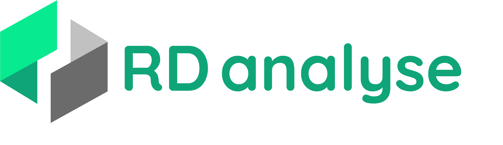

Préparation physique football
Fini les tours de terrain sans objectif.
Un programme construit pour les footballeurs qui ont de l'ambition. Des vraies séances de préparation physique pour être performant.


Créer mon programmePréparation physique football
Un programme construit pour les footballeurs qui ont de l'ambition. Des vraies séances de préparation physique pour être performant.
Notre plus-value
Ce programme prend en compte ta réalité, ton poste, ton football. Nous tentons d'atteindre un niveau personnalisation le plus précis possible. Ton entraînement doit être unique — comme toi.
Un sportif n'a pas les même besoin qu'une personne sédentaire. Généralement, les programmes sont à jour la dessus.
CommunLa plupart des sportifs confondent musculation et préparation physique. Un footballeur ne devrait pas s'entrainer comme un bodybuilder, ni comme un tennisman d'ailleurs.
Peu communLa plupart des préparateurs physiques adaptent leurs séances aux postes de leurs joueurs, mais c'est difficile à gérer avec un groupe entier. Cela reste réservé aux élites.
RareKanté et Busquets jouent tous les deux milieu récupérateur. L'un couvre le double de distance à haute intensité, l'autre donne l'impression de ne jamais courir. Il faut le prendre en compte.
Très rareOn affine encore
En plus du poste et du style de jeu, on intègre ce qui te rend unique pour éviter les erreurs et maximiser les résultats.
Selon le niveau de compétition, il n'y a pas les même exigence physiques.
Entorse ancienne, douleurs genoux, fragilité lombaire. On construit autour, pas dessus.
Les protocoles de force et les seuils hormonaux diffèrent. Les programmes aussi.
On va pas faire semblant, sans jamais mettre les pieds dans une salle tu va être limité. Mais tu serais surpris de voir ce qu'on peut faire avec quasi rien.
Tu va apprendre plein de choses, à part si tu est Florent Manaudou ou Teddy Rinner.
On s'adapte à ton emploi du temps en club, car ça reste le plus important.
L'approche annuelle
En amateur, on fait une prépa en été, parfois une en hiver, et le reste de l'année… rien. Résultat : on repart de zéro à chaque présaison, avec les mêmes douleurs et le même niveau.
En professionnel, la préparation physique ne s'arrête pas après la présaison. Des séances de maintien tout au long de l'année permettent de conserver les acquis. On joue avec les effets résiduels de chaque qualité physique.
En gros, si tu cours uniquement pendant la trêve pour développer ton endurance fondamental, tu aura perdu tout les bénéfices fin septembre. Et chaque qualité physique se maintient plus ou moins longtemps, dont voici quelques exemples :
Prépa physique ≠ musculation
La muscu se focalise sur l'hypertrophie. Un sportif ne peut se limiter à cela. Une approche différente pour un corps différents.
La base de tout. Sans force, aucune autre qualité ne peut s'exprimer pleinement.
Force produite rapidement. Décisive dans les duels et les changements de direction.
Partir en un dixième de seconde. Ce qui fait la différence sur une première touche.
Vitesse de pointe et d'exécution. Pas la peine de te faire un dessin.
Le transfert d'énergie entre membres passe par le gainage. Sans lui, tout se perd.
Changer de direction sans perdre de vitesse ni de contrôle. Essentiel en 1v1.
Répéter des efforts de qualité jusqu'à la 90e. Aide aussi la lucidité.
Renforcer les zones fragiles pour prévenir les blessures avant qu'elles n'arrivent.
Nos méthodes
« Des méthodes utilisées par les pros qui ont fait leur preuves. »
Enchaînement de 4 exercices : lourd → plyométrique → léger → plyométrique léger. Exploite la potentialisation post-activation pour un gain de puissance immédiat.
Alterner une charge lourde et une charge légère dans la même série. Le système nerveux activé par la charge lourde booste la vitesse d'exécution sur la charge légère.
Travail du cycle étirement-détente. Entraîne le muscle à stocker et restituer de l'énergie élastique en un minimum de temps — clé pour l'accélération.
Pas de planche immobile et ennuyante. Il existe bien d'autre façon de bosser le gainage : dynamique, instable, rotation et anti-rotation.
On utilise des protocoles pour renforcer les zones fragilisées par la pratique du football : ischio-jambiers, adducteurs, etc.
Indispensable pour produire et de transmettre efficacement de la force lors de mouvements explosifs.
Questions fréquentes
On répond aux plus importantes. Pour le reste, contacte-nous directement.
Si tu joues au football — U17, senior amateur, vétérans ou futsal — oui. Le programme s'adapte à ton niveau, ton poste, ton équipement et ta disponibilité.
Si tu n'as jamais mis les pieds en salle, on commence par les fondamentaux. Si tu t'entraînes déjà régulièrement, on intègre et on optimise ce que tu fais.
ChatGPT peut générer un programme. Il ne peut pas l'adapter à ta manière de jouer, suivre ta progression sur 3 mois, ajuster quand tu te blesses, ni avoir travaillé avec des footballeurs pendant des années.
Ce qu'on propose, c'est une expertise construite sur le terrain — pas un texte généré. La différence, tu la vois en présaison quand tu arrives dans ton meilleur état physique depuis des années.
C'est toi qui voit ! La meilleure semaine n’est pas celle où toutes les cases sont cochées, mais celle que tu peux répéter durablement et qui travaille les bonnes priorités.
Les séances durent entre 45 et 75 minutes — conçues pour s'intégrer autour de tes entraînements collectifs, pas en concurrence avec eux.
Le plus tôt sera le mieux. Chaque jour que tu passes à attendre est perdu.
Si tu commences en pleine saison, on ira crescendo pour ne pas que tu sois à plat pour les moments importants.
Bonne question, c'est important. On veut rendre la préparation physique accéssible à tous. C'est pourquoi on a mis en place des tarifs intersséssants. Dès 19€ tu peux avoir un programme.
Ensuite des offres plus complètes et sur le long terme vont voir le jour.
Non. Lors du questionnaire, tu indiques ton matériel disponible : salle complète, salle basique, bandes élastiques, lest, ou rien du tout. Le programme s'adapte.
La pliométrie et le gainage fonctionnel ne nécessitent aucun équipement. D'autres exercices peuvent être adaptés avec du matériel minimal. Mais on va pas se mentir, difficile de faire quelque chose de professionnel avec rien de rien.
Prêt à commencer ?
Réponds au questionnaire, on analyse ton profil et on te livre un programme construit autour de toi — pas d'un joueur fictif.
Créer mon programme →